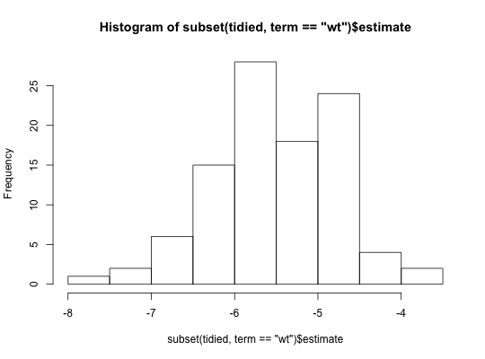
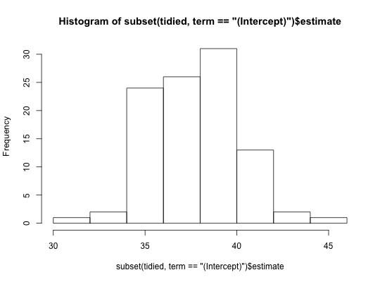

A balanced bootstrap generates R replicates in which each element
appears R times.
balanced_bootstrap(data, ...) # S3 method for data.frame balanced_bootstrap(data, R = 1L, ...) # S3 method for grouped_df balanced_bootstrap(data, R = 1L, stratify = FALSE, ...)
TRUE, resample within groups, otherwise,
resample by groups instead of rows.A data frame with R rows and the following columns:
resample objects. Training sets.resample objects. Test sets.data.frame: Balanced bootstrap of rows in a data frame.
grouped_df: Balanced bootstrap either by group, or
within groups (if stratify = TRUE).
The boot function boot which is the
canonical R bootstrap implementation.
# example from modelr::bootstrap library("purrr") library("dplyr") boot <- balanced_bootstrap(mtcars, 100) models <- map(boot$sample, ~ lm(mpg ~ wt, data = .)) tidied <- map_df(models, broom::tidy, .id = "id") hist(subset(tidied, term == "wt")$estimate)hist(subset(tidied, term == "(Intercept)")$estimate)